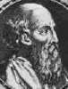

Philosophy Pages
| Dictionary | Study Guide | Logic | F A Q s | ||
|---|---|---|---|---|---|---|
| History | Timeline | Philosophers | Locke | |||
| Philosophy Pages
| Dictionary | Study Guide | Logic | F A Q s | ||
|---|---|---|---|---|---|---|
| History | Timeline | Philosophers | Locke | |||
The great golden age of Athenian philosophy, encompassing Socrates, Plato, and Aristotle only lasted for about a hundred years. In the centuries that followed, changes in the political and cultural climate of the ancient world tended to discourage many varieties of philosophical thinking. The Macedonians under Philip and Alexander founded a Greek empire, which was later conquered by the Romans. Although the general culture of this "Hellenistic" period remained Greek in spirit, political power was vested in a highly centralized state, established and maintained primarily through extensive applications of military force. The (sometime) Athenian tradition of participatory government disappeared as individual citizens were excluded from significantly shaping the social structure of their lives.
Hellenistic philosophers, therefore, devoted less attention than had Plato and Aristotle to the speculative construction of an ideal state that would facilitate the achievement of a happy life.
Instead, the ethical thinkers of this later period focussed upon the life of the individual, independently of the society as a whole,
describing in detail the kinds of character and action that might enable a person to live well despite the prevailing political realities.
In general, we might say, such philosophers tried to show how we should live when circumstances beyond our control seem to render pointless everything we try to accomplish.
The Hellenistic schools of philosophy, then, exhibit less confidence and propose solutions less radical than their Athenian predecessors had in the golden era.
The ancient atomists (Leucippus and Democritus) had already worked out a systematic description of the natural world comprising many particular material particles, whose mechanical interactions account for everything that happens. In the Hellenistic period, attention turned to the consequences of such a view for the conduct of human life.

Epicurus Life and Works . . Epicureanism Bibliography Internet Sources |
Epicurus and his followers pointed out (in the Principle Doctrines, for example) that since the indestructible atoms that constitute the material world move, swerve, and collide entirely by chance, everything that happens in the universe lies outside the reach of direct human control. (Notice how this position projects Hellenistic political impotence onto the natural world.) Human life is, therefore, essentially passive: all we can do is to experience what goes on, without supposing ourselves capable of changing it. Even so, Epicurus held that this sort of life may be a good one, if the experiences are mostly pleasant ones.
Thus, in the Letter to Menoeceus, Epicurus held that the proper goal of human life is to achieve mental ease {Gk. αταραξια [ataraxia]} and freedom from pain. All of our sensual desires are natural and their satisfaction is to be desired, since satiation is always a pleasure but frustrated desire is a mild pain. Material goods are worthwhile only to the extent that possessing them contributes to the achievement of peace. What is more, Epicurus held that we have no reason to complain of the fact that human life must come to an end. Since death results in the annihilation of the personality, he argued, it cannot be experienced and is thus nothing to be feared. Thus, Epicureanism was long ago summarized as the view recommending that we "relax, eat, drink, be merry." (Luke 12:19-20)
The parody is accurate as far as it goes: Epicurus did suppose that a successful life is one of personal fulfillment and the attainment of happiness within this life. But the philosophical Epicureans were less confident than many of their later imitators about the prospects for achieving very much pleasure in ordinary life. They emphasized instead the mental peace that comes from accepting whatever happens without complaint or struggle. Notice again that this is a reasonable response to a natural world and social environment that do not provide for effective individual action.
The Roman philosopher Lucretius defended a similar set of theses,
including both atomism in general and an Epicurean devotion to tranquillity in his philosophical poem De Rerum Naturae (On the Nature of Things).
A rival school of philosophy in Athens was that of the Stoics. As originally developed by Zeno of Citium and Chrysippus, stoicism offered a comprehensive collection of human knowledge encompassing formal logic, physical study of the natural world, and a thoroughly naturalistic explanation of human nature and conduct. Since each human being is a microcosm of the universe as a whole, they supposed, it is possible to employ the same methods of study to both life and nature equally.
|

Epictetus Life and Works . . Stoicism Bibliography Internet Sources |
In the Hellenistic period, Epictetus tersely noted the central features of a life thusly lived according to nature in his Encheiridion (Manual). Once again, the key is to understand how little of what happens is within our control, and stoicism earns its reputation as a stern way of life with recommendations that we accept whatever fate brings us without complaint, concern, or feeling of any kind. Since family, friends, and material goods are all perishable, Epictetus held, we ought never to become attached to them. Instead, we treat everything and everyone we encounter in life as a temporary blessing (or curse), knowing that they will all pass away from us naturally.
This seems cold and harsh advice indeed, but it works! If, indeed, we form no attachments and care about nothing, then loss will never disturb the tranquillity and peace of our lives.
This way of life can be happy even for a slave like Epictetus.
But later Roman Stoics like Seneca and
Marcus Aurelius made clear in their lives and writings that it has merits even for those who are better-off.
| Philosophical Ethics | |||||||
|---|---|---|---|---|---|---|---|
| Previous | Next | ||||||
Another school of Hellenistic philosophy illustrates yet again the prevailing lack of confidence that life in this era inspired. The skeptics supposed that the possibility of human knowledge is severely limited in scope and application.
Skepticism began with Pyrrho of Elis, who taught that apart from the sketchy information provided by the senses, we have no genuine knowledge of the nature of things. Unable to achieve certainty about the general structure of the world, human beings should often practice suspension of judgment, which is the only rational response to situations in which they are ignorant. This course naturally results in a nearly total lack of activity, which Pyrrho took to be equivalent to peace of mind. Although he wrote nothing, Pyrrho exerted a powerful influence on succeeding generations through his disciple, Timon of Philius and members of the later Academy.
Centuries later, Sextus Empiricus wrote a history of skeptical philosophy, the
Outlines of Pyrrhonism, and used the Pyrrhonian approach to criticize the pretensions of other schools of thought.
He made it clear that the skeptical challenge to traditional theories of knowledge arises from an unusually strict definition of knowledge itself.
If we can only be said properly to know what is
absolutely certain or
beyond doubt, then very little indeed will be known.
Although it was widely ignored in his own time, the work of Sextus was instrumental in
the modern revival of interest in skeptical philosophy.
Despite (or because of) the gloomy prospects held forward by these schools of philosophy, the later Hellenistic period also produced significant movement toward the consolidation of the older Greek philosophical tradition with the middle-eastern religions of Judaism and Christianity.
Philo Judaeus, for example, tried to develop a comprehensive view embracing both Plato and Judaism. This was no easy task, since the traditional religion of scripture was concrete and historically-rooted, while Plato's philosophy was extremely abstract and general. But since he supposed that the same deity had inspired human awareness of truth in both contexts, Philo maintained that synthesis must be possible. He interpreted the religious texts allegorically, finding in their structure clues and hints of the deeper philosophical truth. (Allegory is a dangerously powerful tool; it often permits or even encourages the 'discovery' of nearly any doctrine you like even within the most straightforwardly prosaic texts. Perhaps "Green Eggs and Ham" is a deeply subversive expression of communist political ideology, while "Bert and Ernie" encourage a homosexual lifestyle, and . . . .) For Philo, the goodness of the one transcendent god is expressed through the divine word {Gk. λογος [logos]}, which is the organizing principle that accounts for everything in the cosmos.
The Christian church fathers were not far behind.
The earliest among them either regarded philosophy as a source of heretical theology (Irenaeus) or offered general anti-intellectual tirades against the power of human reason (Tertullian).
But Justin Martyr carefully noted the natural affinities between the emerging Christian theology and the traditions of thought deriving from Plato, and Origen explicitly endeavored to combine the two in a single system.
This path of development continued for centuries, reaching its peak in Gregory of Nyssa and Ambrose, who was the teacher of
Augustine.
The version of Platonic philosophy that came to be incorporated into the theology of the middle ages, however, had rather little to do with the thought of Plato himself. It was, instead, derived from the quasi-mystical writings of Plotinus. In an aphoristic book called the Enneads, Plotinus used Plato's fascination with the abstract forms of things as the starting-point for a comprehensive metaphysical view of the cosmos.
According to Plotinus, the form of the Good is the transcendent source of everything in the universe: from its central core other forms emanate outward, like the ripples in a pond, losing measures of reality along the way. Thus, although the early emanations retain much of the abstract beauty of their source, those out on the fringes of the cosmos have very little good left in them. Nevertheless, Plotinus supposed that careful examination of anything in the world could be used to lead us toward the central reality, if we use the information it provides as the basis for our reasoning about its origins in something more significant. In principle, progressive applications of this technique will eventually bring us to contemplation of the Good itself and knowledge of the nature of the universe.
But since the Good is both the cause of the universe and the source of its moral quality for Plotinus, philosophical study is a redemptive activity.
Achievement of mystical union with the cause of the universe promises to provide us not only with knowledge but also with the true elements of virtue as well.
It was this neoplatonic philosophy that the Christians found so well-suited to their own theological purposes.
Once the Good is identified with the god of scripture, the details work themselves out fairly naturally.
Thus, we'll find notions of this sort to be a popular feature of medieval philosophy.
| History of Philosophy | |||||||
|---|---|---|---|---|---|---|---|
| Previous | Next | ||||||